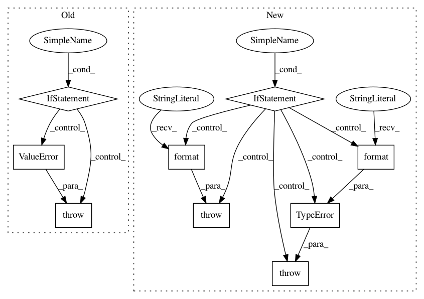

57abf6e86edbf1d9ff1448302d4c8bf970092a03,ffmpeg/nodes.py,Stream,__getitem__,#Stream#,55
Before Change
Please note that this can only be used to select a substream that already exist. If you want to split
the stream, use the `split` filter.
if not isinstance(index, slice) or index.start is not None:
raise ValueError("Invalid syntax. Use `stream[:\"something\"]`, not `stream[\"something\"]`.")
return self.node.stream(select=index.stop)
def get_stream_map(stream_spec):
After Change
video = in["v"].hflip()
ffmpeg.output(audio, video, "out.mp4")
if self.selector is not None:
raise ValueError("Stream already has a selector: {}".format(self))
elif not isinstance(index, basestring):
raise TypeError("Expected string index (e.g. "v"); got {!r}".format(index))
return self.node.stream(label=self.label, selector=index)
def get_stream_map(stream_spec):
In pattern: SUPERPATTERN
Frequency: 3
Non-data size: 9
Instances
Project Name: kkroening/ffmpeg-python
Commit Name: 57abf6e86edbf1d9ff1448302d4c8bf970092a03
Time: 2018-03-11
Author: karlk@kralnet.us
File Name: ffmpeg/nodes.py
Class Name: Stream
Method Name: __getitem__
Project Name: nilmtk/nilmtk
Commit Name: 72f3f5bf50ed2d91cdcfbe2cf47120a2df8883cd
Time: 2014-11-26
Author: jack-list@xlk.org.uk
File Name: nilmtk/results.py
Class Name: Results
Method Name: append
Project Name: lingpy/lingpy
Commit Name: 997f7e378ffd48fd23107037534ad12cc471cdb6
Time: 2013-10-25
Author: frank@pc08447.Germanistik-Kunst.Uni-Marburg.DE
File Name: lingpy/basic/_parser.py
Class Name: _QLCParser
Method Name: _init_first